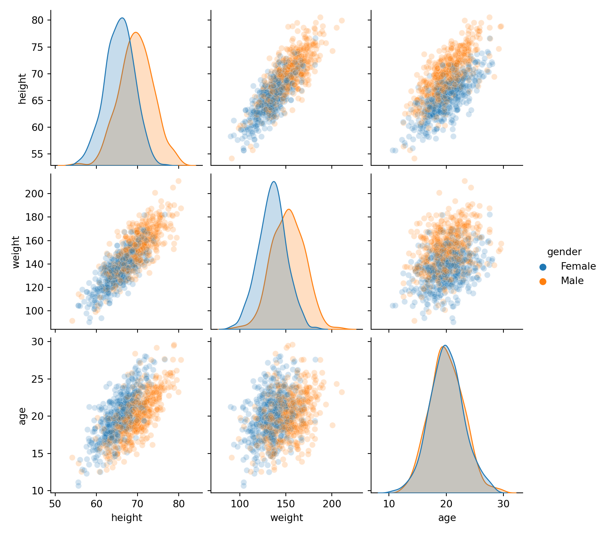
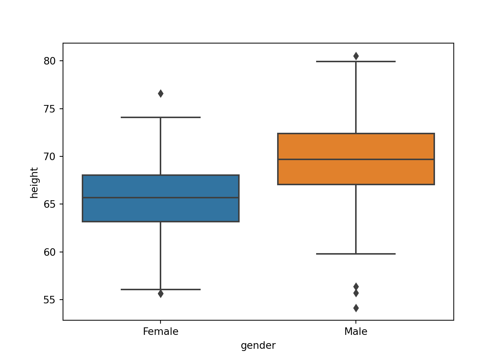
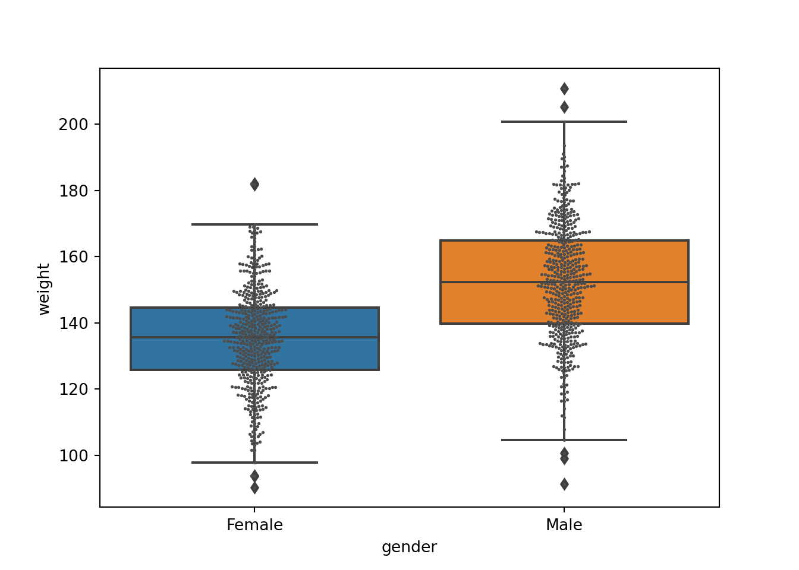
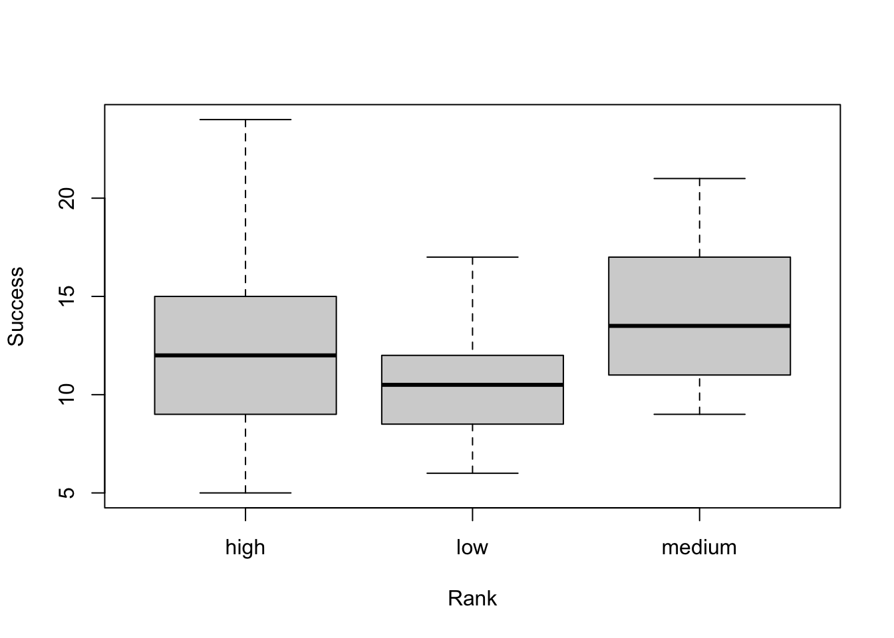

install_miniconda()26 Using Python from R
Objectives
In this module, we look at how to integrate Python code and functions into R.
Preliminaries
- Install and load this package in R: {reticulate}
- Load {tidyverse} and {broom}
- Make sure you have a working Python installation on your computer and a package manager for Python
NOTE: Recent versions of the MacOS, Windows, and Linux operating systems typically include a Python installation by default, but that may not be an up-to-date version and the included package manager may not be comprehensive. Thus, for most users, it is worthwhile to download and install an updated version of Python along with a software system for managing Python libraries and environments.
Anaconda is one such such system; it is a comprehensive, open-source distribution for Python (as well as other scientific computing software, including R, and RStudio, and Jupyter notebooks), and it provides an easy way to get an up-to-date version of Python installed. Binary Anaconda installers are available for most computer operating systems, including MacOS, Windows, and Linux. Running the installer basically installs a command-line package manager, conda, for all of these different pieces of software, as well as a graphical version of that manager and software launcher, named Anaconda-Navigator. Unless you specify otherwise, the current distribution of Anaconda should install (on MacOS) to a directory called ~/anaconda3 at the root of your user folder.
Alternatively, you can download and install a pared-down version of Anaconda called Miniconda, which consists of just the conda package manager, Python, and a limited set of additional packages. You can download and install Miniconda yourself from this URL, in which case it should install to this directory on MacOS: ~/opt/miniconda3.
NOTE: There is no need to install both Anaconda and Miniconda… choose one or the other! Both will write a series of PATH configuration lines to your shell profile, and, if you do install both, the latter one to be installed will overwrite the PATH details of the former in your default shell profile.
Finally, you can download and install Miniconda from within {reticulate}. In fact, when you first run a function from library(reticulate), you may see a prompt asking if you want to install Miniconda…
No non-system installation of Python could be found.
Would you like to download and install Miniconda?
Miniconda is an open source environment management system for Python.
See https://docs.conda.io/en/latest/miniconda.html for more details.If so, you can answer “Y” and let the installation run. In doing so, the installer will create a directory at the base of your user folder called ~/Library/r-miniconda with a conda installation in it. If you are not prompted to install Miniconda, you can install it manually using the {reticulate} command install_miniconda().
NOTE: This process installs Miniconda to a different location and does not add PATH configuration lines to your shell script. Thus, if you choose this route for Miniconda installation, it will be less easy to use the terminal to run conda commands as you would then need to manually configure your PATH.
Background
One of the wonderful things about R is that it offers interoperability with several other programming languages useful for statistical analysis, data science, and data visualization, including Python, Stan, Julia, JavaScript, and C++. Here, we explore the {reticulate} package, which essentially embeds a Python session within your R session, allowing you the opportunity to smoothly integrate Python code into R workflows and analyses through the RStudio IDE. For additional details, see the information on the {reticulate} package’s website R Interface to Python website.
With {reticulate}, we can call Python code from R in several ways:
- By including Python code chunks within an R Markdown document
- By importing Python modules into R and accessing their functions
- By sourcing entire Python scripts (“.py” files)
- By using Python interactively within an R session
We can also use {reticulate} to convert between R and Python objects (e.g., between R and Python {pandas} data frames).
Getting Started with {reticulate}
Configuring Python
Many computers may have several different iterations of Python installed in different places. Upon loading {reticulate} and first calling the Python function import, either directly or implicitly , R tries to find and “attach” to one of these versions. To control the process, it is recommended that you specify or build a desired Python version and then pass this suggested instance to {reticulate}. Restarting R will unbind an instance and allow you to specify a different one.
The R commands Sys.which("python") and Sys.which("python3") will return the path to the current version of Python (for pre-version 3 installations) and Python3, respectively that R has bound. Unless you specify a Python instance from a particular “environment” (see below), these will usually be “/usr/bin/python” and “/usr/bin/python3” or “/usr/local/bin/python” and “/usr/local/bin/python3”. [Sometimes, the path returned by these functions is actually a symlink, a kind of pointer, to the actual executable file.]
NOTE: If your computer does not have an older, pre-3.0 version of Python installed,
Sys.which("python")may return a blank path or the path to a 3.0 version of Python.
Sys.which("python")
Sys.which("python3")After loading {reticulate}, if you run the function py_config(), it will return information on the version of and path to the Python binary (executable program) and associated libraries that {reticulate} is currently bound to, It also returns the version and location of {numpy}, an important Python library for maths, if it is installed.
py_config()## python: /Users/ad26693/anaconda3/bin/python3.11
## libpython: /Users/ad26693/anaconda3/lib/libpython3.11.dylib
## pythonhome: /Users/ad26693/anaconda3:/Users/ad26693/anaconda3
## version: 3.11.5 (main, Sep 11 2023, 08:31:25) [Clang 14.0.6 ]
## numpy: /Users/ad26693/anaconda3/lib/python3.11/site-packages/numpy
## numpy_version: 1.24.3
##
## NOTE: Python version was forced by RETICULATE_PYTHON_FALLBACKYou can specify or change the instance of Python that {reticulate} uses via the RStudio IDE by going either the Preferences (MacOS) or Global Options (MacOS or PC) dialog box and selecting the Python section…
… and then choosing the desired Python interpreter from the dialog boxes. RStudio will try to highlight all available Python interpreters for you, either ones installed in the system (e.g., distributed with MacOS) or ones associated with different virtual or conda “environments” (see below) that you have created. You can also type the path to the version of the Python interpreter you wish to using directly into the dialog box. After you click, “Apply” you will be prompted to restart R to allow {reticulate} be able to rebind to a different interpreter.
After R restarts, reload {reticulate}, then call py_config() to verify that {reticulate} is connected to the desired Python executable.
NOTE: After changing the bound version of Python in this manner and running py_config(), the last line of the output should read as follows:
NOTE: Python version was forced by use_python() function
Note that specification of the Python interpreter in this manner is “sticky”. That is, if an interpreter is specified in Global Options, then that takes precedence over assigning an interpreter with use_python() or by assigning an environment (see below). That is, if you specify a version of Python to use in Global Options, you will not be able change to a different interpreter or specify what environment to use via code.
If we do not use Global Options or Preferences to specify an interpreter, we can instead directly suggest what Python interpreter that {reticulate} should use from R by calling the use_python() function with the path to the interpreter as an argument. For example, as noted above, the current Anaconda distribution typically installs its own version of Python at “~/anaconda3/bin/python”, thus we could specify that we want {reticulate} to bind to that version as follows:
use_python("~/anaconda3/bin/python", required = TRUE)
py_config() # confirm our selectionSimilarly, as described above, the Miniconda version of the conda package manager installed from within {reticulate} places its version of Python inside a user’s Library directory, at “~/Library/r-miniconda/bin/python”. We can set {reticulate} to bind that version using the following code:
use_python("~/Library/r-miniconda/bin/python", required = TRUE)
py_config() # confirm our selectionHowever, it is important to remember that if you want to modify the particular instance of Python that {reticulate} should to attach to, it is necessary to first RESTART R, which you can do either in RStudio (by choosing that option from the Session menu) or by using the function .rs.restartR() at a command prompt), then load {reticulate} again, and then run the use_python() function. After doing this, you can run py_config() again to confirm that the Python configuration has indeed changed as desired, and you can check with Sys.which("python") or Sys.which("python3") to confirm what instance of Python is attached. For example…
.rs.restartR()
library(reticulate)use_python("~/Library/r-miniconda/bin/python", required = TRUE)
py_config() # confirm our selection
Sys.which("python3")NOTE: After changing the bound version of Python in this manner and running py_config(), the last line of the output should read as follows:
NOTE: Python version was forced by use_python function
Note that changing the intepreter this way is not “sticky.” That is, if you were to restart R again, load {reticulate}, and run py_config() without specifying a configuration using use_python(), {reticulate} will scan along your PATH and other possible places where Python might be installed to find the first appropriate instance, giving preference to one where {numpy} is present as that library is very important for integrating Python and R. Importantly, this may find a version of Python not associated with any particular “environment” (see below).
Working with Environments
Whenever we work with Python, it is best to do so in the context of an “environment”. An environment (such as the “r-reticulate” environment created by default by installing Miniconda) is basically a folder that contains all the necessary executables and Python modules (which are akin to R packages) that a particular Python project needs. An environment is kind of analogous to a repository containing an R Project, except that in R Projects, the R executable and all of the packages used in a project are not physically replicated in each repository the way that a Python executable and referenced modules are (often) replicated within the environment. When we install any specific module that we want to are going to use in a script, we typically install it to a specific working environment.
Using environments is a way of isolating and keeping different versions of modules independent so as not to “break” our code when modules are updated. They also allow us to experiment with different Python setups.
Python and {reticulate} support two different types of environments, conda environments, which are managed by conda and “virtual environments”. We will focus first on conda environments.
conda Environments
The {reticulate} function conda_list() can be used to list all of the different conda environments that are registered within conda installations on our computer, along with a path to the Python binary associated with the environment.
NOTE: Sometimes the path returned by
conda_list()is a symlink to the actual executable file. That is, the symlink is located in the environment folder while the actual executable file resides in a different folder like/usr/bin/or/usr/local/bin.
conda_list()## name python
## 1 base /Users/ad26693/anaconda3/bin/python
## 2 NGSpeciesID /Users/ad26693/anaconda3/envs/NGSpeciesID/bin/python
## 3 cutadapt /Users/ad26693/anaconda3/envs/cutadapt/bin/python
## 4 r-reticulate /Users/ad26693/anaconda3/envs/r-reticulate/bin/pythonAfter running this command, you should see two or three environments listed, depending on whether you installed Anaconda, Miniconda through {reticulate}, or both. Installing Anaconda should have created an environment called “anaconda3” by default, while installing Miniconda through {reticulate} should have created two environments, one called “base” and one called “r-reticulate”.
You can set up other new environments by running the function conda_create() and specifying a different environment name as an argument.
NOTE: By default, if no environments have yet been defined, the
conda_create()function creates one named “r-reticulate”. This is what the Miniconda installer ran behind the scenes to create the default “r-reticulate” environment. But we can also provide an alternative name within the particular active conda installation.
When you create a new environment with conda_create(), it will be set up inside of the envs/ directory in which our conda installation resides (again, if using Miniconda, this should be within the ~/Library/r-miniconda/ directory. Environments created with this function will include a default suite of Python packages that {reticulate} will have access to. They will also be associated with the particular instance of Python that is currently bound to {reticulate}, unless we specify otherwise using the “python_version=” argument.
# create a new **conda** environment named 'my-environment'
conda_create("my-environment")
conda_list()The {reticulate} function conda_remove() will delete a particular conda environment.
conda_remove("my-environment")
conda_list()Specifying an Environment
If we have more than one conda environment set up on our machines, perhaps with different Python modules installed and/or using different versions of Python, we can use the functions use_miniconda(condaenv=) or use_condaenv(condaenv=) to “activate” a particular environment, i.e., to specify which one you want to bind to a particular R and {reticulate} session. [The “r-reticulate” environment set up by Miniconda, if present, is the one that will be used by default if no other environment is specified.] Given that each environment contains a Python executable (or path to an executable), this is an alternative to use_python() as a way of also specifying a Python version for a particular project. Specifying an environment to use is analogous to opening a particular R Project from a repository.
As for use_python(), the way to force use of a non-default environment is to restart R, load {reticulate}, and run the function use_miniconda() (or, equivalently, use_condaenv()) as below, after which running py_config() should confirm the configuration.
.rs.restartR()
library(reticulate)use_miniconda(condaenv = "r-reticulate", required = TRUE)
# or use_condaenv(condaenv = 'r-reticulate', required = TRUE)
py_config()
Sys.which("python3")NOTE: It is a good idea to include the argument
required=TRUE, which ensures that an error will be thrown if the specified environment is not found.
It is possible to also run all of these conda functions at the command prompt in a terminal…
# to list your conda environments and show which one is active
$ conda info --envs
# OR
$ conda env listNOTE: Doing this from the command line shows an asterisk next to an environment called “base” that is a default environment that was created when we first installed Anaconda (as opposed to Miniconda) and is associated with your base conda installation. This is typically at the path: “~/anaconda3” in current Anaconda installations.
# to create a conda environment
$ conda create --name my-environment
# to create a conda environment with a specific version of Python
# this will install an executable for the specified version
# of Python within the environment
$ conda create --name my-environment python=3.9
# to activate an environment
$ conda activate my-environmentNOTE: Running
conda env listafter activating a different environment shows the asterisk next to the newly activated environment.
# to list the packages in the active environment
$ conda list
# to deactivate an active environment and return to *base*
$ conda deactivate
# to remove an environment
$ conda remove --name my-environment --allNOTE: An active environment needs to be deactivated before it can be removed.
The conda documentation provides further details on how to use the conda package and environment management system that is central to the Anaconda and Miniconda distributions.
“Virtual” Environments
As noted above, {reticulate} actually supports using two different Python environment flavors: **conda*“** environments (as we set up above) and”virtual” environments. The former are stored inside of a directory called envs/ that sits within a particular conda installation. The latter type of environments are typically stored in a hidden directory called .virtualenvs/ at the root of your user folder.
To create and use “virtual” rather than conda environments with {reticulate}, the commands are very similar. Unless otherwise specified, the environment created will be bound to the Python interpreter associated with the current {reticulate} and R session.
virtualenv_create(envname = "r-reticulate")
virtualenv_create(envname = "my-environment")
virtualenv_list()
virtualenv_remove(envname = "my-environment")
use_virtualenv(virtualenv = "r-reticulate")Once we have bound {reticulate} to a particular conda or “virtual” environment, we can check/confirm how our setup is configured by running py_config().
py_config()Adding Python Modules
The {reticulate} package includes the simple function py_install() that can be used to install one or more Python modules into a specified environment (either a conda environment, as we created above, or a “virtual environment” if we are using that flavor of environment instead). With py_install(), new modules, by default, will be installed into the environment named “r-reticulate” (though this can be changed by specifying the “envname=” argument).
NOTE: Alternatively, the function
conda_install(envname, packages)will install python modules into a particular, specified conda environment, and the functionvirtualenv_install(envname, packages)will install packages into into a particular virtual environment, butpy_install()is sufficient for our purposes.
Below, we install the python modules {scipy}, {numpy}, {pandas}, {matplotlib}, and {seaborn}, which are used in the subsequent Python coding examples, into the “r-reticulate” Miniconda environment.
NOTE: In the function below, the
envname=argument does not need to specified, but I have included it anyway.
p <- c("numpy", "scipy", "pandas", "matplotlib", "seaborn", "statsmodels")
py_install(envname = "r-reticulate", packages = p)## Using virtual environment 'r-reticulate' ...## + /Users/ad26693/.virtualenvs/r-reticulate/bin/python -m pip install --upgrade --no-user numpy scipy pandas matplotlib seaborn statsmodels# or conda_install(envname = 'r-reticulate', packages = p) or
# virtualenv_install(envname = 'r-reticulate', packages = p, required = TRUE)You can also use standard shell installation utilities at a terminal prompt (e.g., conda or pip) to activate an environment and to install Python modules.
# to activate an environment...
$ conda activate r-reticulate
# to install a module into an active conda environment...
$ conda install scipy
# or to install into a different, named environment, e.g., r-reticulate
$ conda install --name r-reticulate scipy
# to install a module into system level Python (i.e., globally, instead of in a specified environment)
$ sudo pip install scipyUsing Python Code in R
As mentioned in the introduction above, there are multiple ways to integrate Python code into your R projects and workflow. You can…
Include Python code chunks in R Markdown documents
R Markdown now includes a language engine that supports bi-directional communication between R and Python (R chunks can access Python objects and vice-versa).
Import Python modules to access their functions directly from R
The
import()function from {reticulate} enables you to import any Python module and call its functions directly from R.Source a Python script from R
The
source_python()function from {reticulate} enables you to source a Python script the same way you wouldsource()an R script. Python functions and objects defined within the script become directly available to the R session.Use a Python REPL (“Read-Eval-Print Loop”)
The
repl_python()function embeds an interactive Python console within R that you can use interactively, as you would the R console. Objects you create within Python are available to your R session, and vice-versa.
More detail on each of these approaches, and examples, are given below.
Python Code Chunks
The following example Python code chunk, which can be included in an “.Rmd” document, imports the zombie apocalypse survivors datafile from GitHub and plots a linear model of height~age and a boxplot of height~gender. Note that the chunk type is {python} not {r}!
# This is a Python code chunk
import pandas
import seaborn
import matplotlib
f = "https://raw.githubusercontent.com/difiore/ada-2024-datasets/main/zombies.csv"
z = pandas.read_csv(f)
print(z.head())## id first_name ... major age
## 0 1 Sarah ... medicine/nursing 17.642745
## 1 2 Mark ... criminal justice administration 22.589513
## 2 3 Brandon ... education 21.912760
## 3 4 Roger ... energy studies 18.190582
## 4 5 Tammy ... logistics 21.103986
##
## [5 rows x 10 columns]z = z[['gender', 'height', 'weight', 'age', 'major']]
# create a plot using the python seaborn module
p = seaborn.pairplot(
data = z,
hue = 'gender',
kind = 'scatter',
plot_kws = dict(alpha = 0.2)
)## /Users/ad26693/anaconda3/lib/python3.11/site-packages/seaborn/axisgrid.py:118: UserWarning: The figure layout has changed to tight
## self._figure.tight_layout(*args, **kwargs)# plot the active plot object
matplotlib.pyplot.show(p)
matplotlib.pyplot.clf()
p = seaborn.boxplot(x="gender", y="height", data=z)
# plot the active plot object
matplotlib.pyplot.show(p)
# type `exit` at the Python prompt to exit the REPL
exit## Use exit() or Ctrl-D (i.e. EOF) to exitImporting and Using Modules
Running the import() command in R will load functions and other data from within Python modules and classes directly into R. The functions and data included in the Python module can then be accessed via the $ operator, analogous to the way they would when we interact with an R object.
Imported Python modules also support code completion and inline help, again paralleling what we see with R packages.
pandas <- import("pandas")
seaborn <- import("seaborn")
matplotlib <- import("matplotlib")
f <- "https://raw.githubusercontent.com/difiore/ada-2024-datasets/main/zombies.csv"
z <- pandas$read_csv(f)
head(z)## id first_name last_name gender height weight zombies_killed
## 1 1 Sarah Little Female 62.88951 132.0872 2
## 2 2 Mark Duncan Male 67.80277 146.3753 5
## 3 3 Brandon Perez Male 72.12908 152.9370 1
## 4 4 Roger Coleman Male 66.78484 129.7418 5
## 5 5 Tammy Powell Female 64.71832 132.4265 4
## 6 6 Anthony Green Male 71.24326 152.5246 1
## years_of_education major age
## 1 1 medicine/nursing 17.64275
## 2 3 criminal justice administration 22.58951
## 3 1 education 21.91276
## 4 6 energy studies 18.19058
## 5 3 logistics 21.10399
## 6 4 energy studies 21.48355# create a plot using the python seaborn module
p <- seaborn$lmplot(x = "age", y = "height", data = z)Because there is sometimes some awkwardness with using the {matplotlib} Python module from within R, we can switch back to a {python} chunk to print out the figure created…
import matplotlib
r.p
# plot the active plot object created with the R code above
matplotlib.pyplot.show(p)
# type `exit` at the Python prompt to exit the REPL
exit## Use exit() or Ctrl-D (i.e. EOF) to exitSourcing a Python Script
We can use the source_python() function in R to source a Python script the same way we would source() an R script. We give the function the path to the file to load in and run as an argument. This process assumes the “.py” script is stored in a directory called src/ located in the current working directory. The script loads in the zombie apocalypse survivors dataset from GitHub and then plots a boxplot of weight~gender.
f <- "python_script.py"
source_python(paste0(getwd(), "/src/", f))## first_name last_name ... major age
## id ...
## 1 Sarah Little ... medicine/nursing 17.642745
## 2 Mark Duncan ... criminal justice administration 22.589513
## 3 Brandon Perez ... education 21.912760
## 4 Roger Coleman ... energy studies 18.190582
## 5 Tammy Powell ... logistics 21.103986
##
## [5 rows x 9 columns]As above, we switch to a {python} chunk to print out the figures created…
import matplotlib
r.p
# plot the active plot object created with the sourced python code
matplotlib.pyplot.show(p)
# type `exit` at the Python prompt to exit the REPL
exit## Use exit() or Ctrl-D (i.e. EOF) to exitUsing Python Interactively
Finally, if you want to work with Python interactively, you can call the repl_python() function from R, which provides a Python REPL (“Read–Eval–Print Loop”) session embedded within your R session.
repl_python()To test this out, copy and paste each of the following lines singly at the Python console prompt (>>>).
import pandas
import seaborn
import matplotlib
f = "https://raw.githubusercontent.com/difiore/ADA-datasets/master/zombies.csv"
z = pandas.read_csv(f)
print(z.head())
seaborn.lmplot(x="weight", y="height", data=z)
matplotlib.pyplot.show()
exitConverting Data Objects
One of the great things about {reticulate} allows us to share variables and states of Python objects across Python code chunks within the same R Markdown document, the same way we can with R code chunks.
It also allows us to access objects created within Python code chunks from R using the py object (e.g., we can use py$age would access a variable, age created within Python from R).
Likewise, {reticulate} allows us to access objects created within R chunks from Python using the r object (e.g., we could use r.sex to access a variable named sex that was created within R from inside a Python code chunk).
{reticulate} supports built-in conversion between Python and R for many Python objects, including {numpy} arrays and {pandas} data frames.
EXAMPLE:
Here, we run a {python} chunk and load in a familiar data file from over the web…
import pandas
f = "https://raw.githubusercontent.com/difiore/ada-2024-datasets/main/woollydata.csv"
d = pandas.read_csv(f)
print(d.head())## name success age rank
## 0 Aaron 15 9.80 medium
## 1 Adam 14 12.06 medium
## 2 Agustin 22 16.33 high
## 3 Alan 9 8.79 low
## 4 Andrew 12 6.81 lowexit## Use exit() or Ctrl-D (i.e. EOF) to exit… then we run an {r} chunk that accesses and uses the Python object created in the chunk above, after which we load a different data set from the web and run a linear model on it using R…
library(tidyverse)
library(broom)
head(py$d)## name success age rank
## 1 Aaron 15 9.80 medium
## 2 Adam 14 12.06 medium
## 3 Agustin 22 16.33 high
## 4 Alan 9 8.79 low
## 5 Andrew 12 6.81 low
## 6 Anthony 11 14.84 lowboxplot(py$d$success ~ py$d$rank, xlab = "Rank", ylab = "Success")
f <- "https://raw.githubusercontent.com/difiore/ada-2024-datasets/master/zombies.csv"
z <- read_csv(f, col_names = TRUE)
head(z)## # A tibble: 6 × 10
## id first_name last_name gender height weight zombies_killed
## <dbl> <chr> <chr> <chr> <dbl> <dbl> <dbl>
## 1 1 Sarah Little Female 62.9 132. 2
## 2 2 Mark Duncan Male 67.8 146. 5
## 3 3 Brandon Perez Male 72.1 153. 1
## 4 4 Roger Coleman Male 66.8 130. 5
## 5 5 Tammy Powell Female 64.7 132. 4
## 6 6 Anthony Green Male 71.2 153. 1
## # ℹ 3 more variables: years_of_education <dbl>, major <chr>, age <dbl>m <- lm(data = z, height ~ weight)
tidy(m)## # A tibble: 2 × 5
## term estimate std.error statistic p.value
## <chr> <dbl> <dbl> <dbl> <dbl>
## 1 (Intercept) 39.6 0.596 66.4 0
## 2 weight 0.195 0.00411 47.5 2.65e-258… then we again run a {python} chunk, now accessing the R data frame created in the {r} chunk above and using Python to run and print a summary of the same linear model.
print(r.z.head())## id first_name ... major age
## 0 1.0 Sarah ... medicine/nursing 17.642745
## 1 2.0 Mark ... criminal justice administration 22.589513
## 2 3.0 Brandon ... education 21.912760
## 3 4.0 Roger ... energy studies 18.190582
## 4 5.0 Tammy ... logistics 21.103986
##
## [5 rows x 10 columns]import pandas
# statsmodels package for OLS using formulas
import statsmodels.formula.api as smf
# regression of height ~ weight with intercept
m = smf.ols(formula = 'height ~ weight', data=r.z)
print(m.fit().summary())## OLS Regression Results
## ==============================================================================
## Dep. Variable: height R-squared: 0.693
## Model: OLS Adj. R-squared: 0.693
## Method: Least Squares F-statistic: 2255.
## Date: Fri, 12 Apr 2024 Prob (F-statistic): 2.65e-258
## Time: 16:05:24 Log-Likelihood: -2288.6
## No. Observations: 1000 AIC: 4581.
## Df Residuals: 998 BIC: 4591.
## Df Model: 1
## Covariance Type: nonrobust
## ==============================================================================
## coef std err t P>|t| [0.025 0.975]
## ------------------------------------------------------------------------------
## Intercept 39.5654 0.596 66.406 0.000 38.396 40.735
## weight 0.1950 0.004 47.486 0.000 0.187 0.203
## ==============================================================================
## Omnibus: 8.716 Durbin-Watson: 1.938
## Prob(Omnibus): 0.013 Jarque-Bera (JB): 9.617
## Skew: 0.159 Prob(JB): 0.00816
## Kurtosis: 3.360 Cond. No. 1.14e+03
## ==============================================================================
##
## Notes:
## [1] Standard Errors assume that the covariance matrix of the errors is correctly specified.
## [2] The condition number is large, 1.14e+03. This might indicate that there are
## strong multicollinearity or other numerical problems.# del [pandas, seaborn, matplotlib, ggplot, smf]
# delete refs to imported modules
exit## Use exit() or Ctrl-D (i.e. EOF) to exit